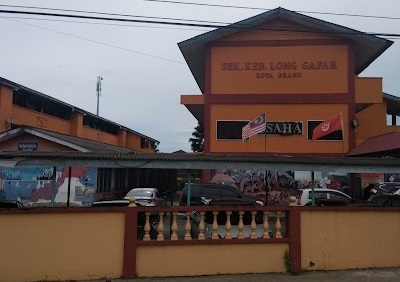
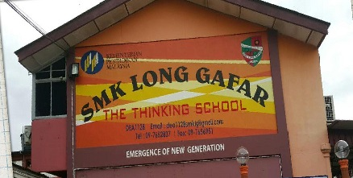
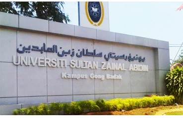
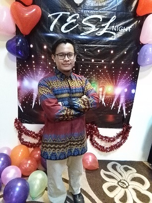
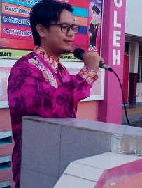

My Education
During my elementary and primary, I went to Sekolah Kebangsaan Long Gafar and Sekolah Menengah Kebangsaan Long Gafar. Both schools are located side by side to each other and were separated by the wall closed to the canteen. Both schools are located for like 3KM from my house. I have experienced many different types of transportation to go to the schools and going home. From hopping in school bus, car, motorcycle, to the cycling, and even walking.
| SK Long Gafar | SMK Long Gafar |
|---|---|
|  |  |
After secondary school, i continued my study at UniSZA, in Diploma of Teaching English As Second Language (TESL). My campus was located at Gong Badak. In this campus, there are many friends that I have made with from different diploma courses such as International Tradings, Human Resources management, Industrial Design, Laws, Islamic Contemporary, and of course from my own classmates.
UniSZA's main gate

"TESL Night"

Me was at Dinner with my coursemates
Practicum Teacher

I was giving a goodbye speech to the students and fellow teachers on my last day as practicum teacher at Sekolah Kebangsaan Tanjung Gelam.